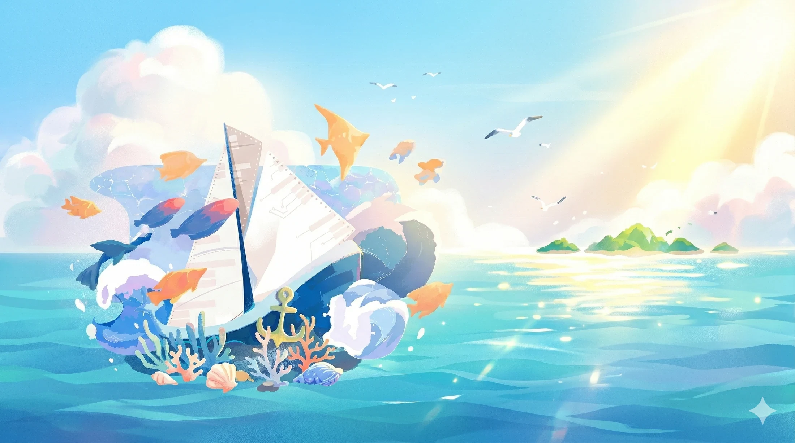
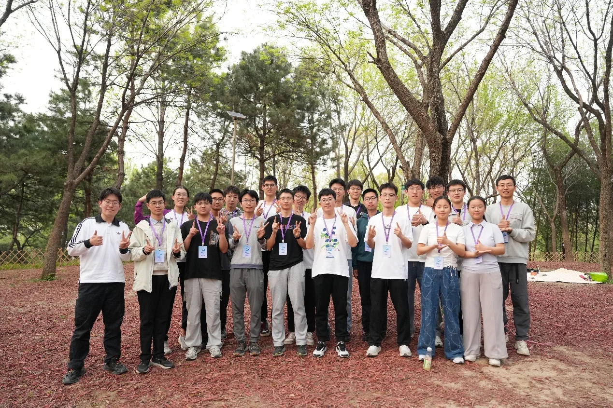
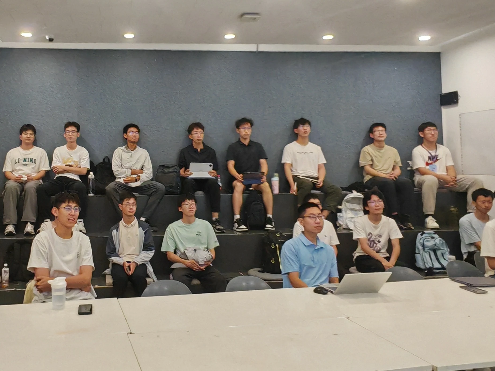
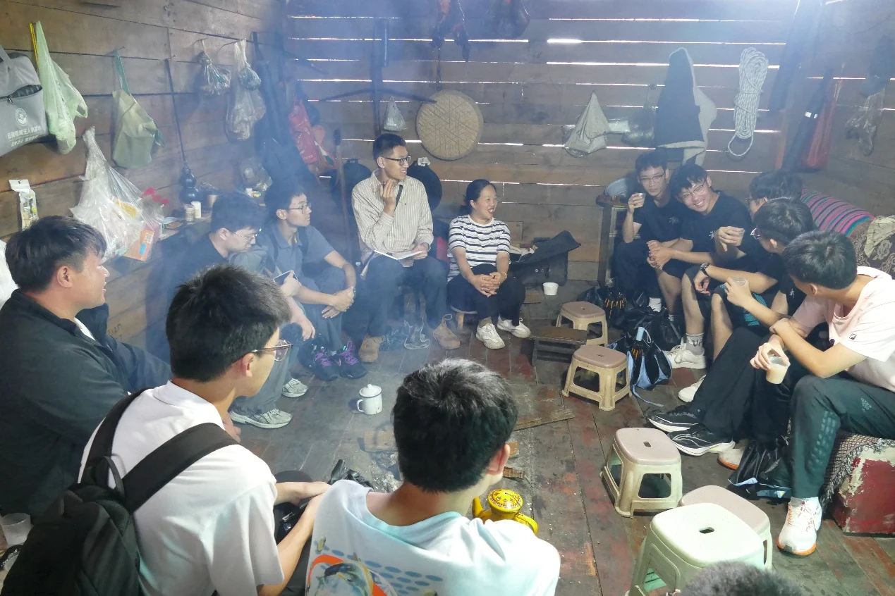
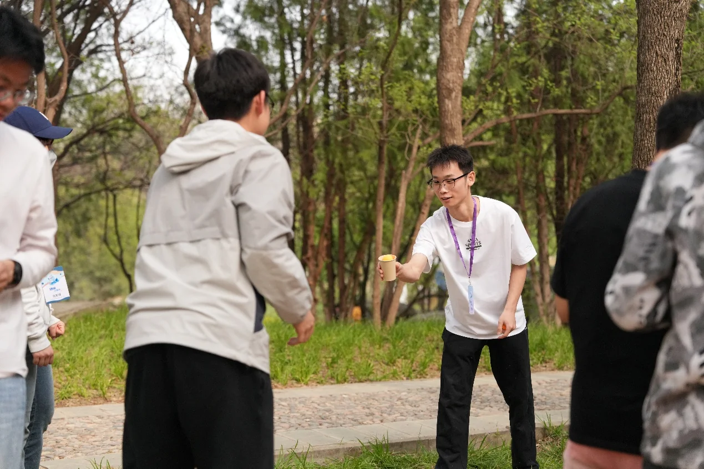

清华大学电子系
学生骨干培养计划
无限梦想
扬帆起航

“扬帆”计划是由清华大学电子系联合系内多个学生组织开展的学生骨干培养项目，致力于为电子系同学搭建集能力培养、社会实践与交流成长于一体的综合性平台。
扬帆计划以培养具有社会责任感、团队协作精神和实践能力的优秀学生骨干为目标，通过系统性的学生工作技能培训、多元化的实践活动及团队合作机会，帮助成员提升综合素质、拓宽个人视野，在实践中探索自我价值与未来发展方向。
扬帆计划每期于春季学期招募电子系大一同学作为学员加入，每期由一名顾问和若干小导带领学员开展活动、完成培养计划。现在扬帆计划走到了第十二期。

培养体系
扬帆计划以“无限梦想，扬帆起航”为初心，构建了贯穿全年、知行合一、层层递进的学生骨干培养体系。以“接受培养”与“输出能力”为两大主线，在培养过程中推动学员从客体向主体转变，在后期环节充分发挥学生骨干的带头作用。
通过例会旁听、例餐交流，引导学员深入认知系内社工架构，激发社工志趣。在能力锻造阶段，依托社工技能、实践技能、科研技能等系列微沙龙，提升社工能力，并配套扬帆+系列实践与寒假支队联合技能培训等活动，鼓励学员向外输出，系统提升其组织协调、沟通表达与领导胜任力。
扬帆实践以开拓眼界、锻炼组织能力为目的，以暑期集体实践和寒假分组带队实践为核心展开。学员在真实的社会场景中承担具体任务或带队实践，在解决实际问题中检验并提升组织协调与领导力，完成从“学”到“用”的转化。

扬帆实践
扬帆实践是扬帆计划最重要的培养项目之一。
扬帆实践主要包括三部分：暑期集体实践、寒假带队实践和实践交流分享。
暑期集体实践
暑期集体实践通常由顾问或小导担任支队长，小导担任工作组组长，学员作为支队员参与实践。在顾问统筹、小导牵头下，学员分组参与活动、调研、宣传、后勤等工作。
近年的暑期实践通常围绕基层服务、支教、社会调研等主题展开，如第十二期“E探独龙”、第十一期“微光”等。
寒假带队实践
寒假带队实践由学员自主组队，担任支队长或承担支队的重要工作。寒假实践不仅是学员将所学技能运用于实际工作的集中体现，更是一学年扬帆社工技能培养的综合“大考”。寒假实践以国内实践为主，主题涵盖科技发展、学科探索、基层服务、社会调研、单片机支教等多个领域。
实践交流分享
寒假实践结束后，顾问、小导会组织内部实践交流分享会。学员回顾实践历程、总结实践收获、交流工作方法、分享实践趣事，在交流中提升经验总结与分享能力、观点表达能力，增强作为社工骨干的责任意识。
第十二期还创新开展了寒假实践前的实践技能分享会，由学员结合自身经历，向朋辈分享不同实践岗位所需的社工技能。具备不同技能的学员共同筹备分享内容，并主导分享会的组织开展，不仅促进了经验交流，也为锻炼协作能力和领导能力提供了更多机会。
实践交流分享日常活动
扬帆计划的活动一方面与培养计划紧密结合，另一方面也通过大大小小的团建活动充实着学员们的课余生活。
破冰活动
破冰活动一般是一期扬帆计划开始以后的第一次全体活动，一般以郊游野餐的形式开展。在破冰活动中，学员们相互介绍认识彼此，一起玩彰显人类智慧的团建小游戏。
例会旁听
学员们按照各自志趣分组旁听团委、学生会等各个学生组织的部门例会，对各个部门的工作、氛围有一个初步的了解，以帮助同学们明确社工志趣、更快地熟悉社工岗位的工作。
例餐交流
扬帆计划组邀请各学生组织的部门负责人与学员们共同用餐，交流部门工作经验和心得。帮助同学们进一步了解社工工作。
扬帆+活动
我们鼓励扬帆的同学在干中学，通过参与或组织各类活动，帮助同学们在大大小小的社工活动中积累工作经验。十二期的学员参与过的活动有：甲团答辩、TMS时事讨论会、实践组国内实践事务等等；学员们还将自主组织感兴趣的活动。
微沙龙
扬帆计划组会邀请嘉宾进行各类主题的分享，如社工、科研、实践、各种技能培训等等。
兴趣分享会
扬帆的同学们挑选各自最感兴趣、最熟悉的一个领域分享给其余同学，增进学员之间的了解、拓展视野。
各类团建
多如牛毛、大大小小、润物细无声。
年会
扬帆的结业活动。会邀请在本期的扬帆计划中表现突出的同学分享自己的成长和经历，也会由顾问回顾这一整期的培养、展望未来扬帆计划的发展。

当你启航前往伊萨卡
但愿你的旅途漫长
充满冒险，充满发现